记录一下网安的初级实验流程，自己摸配置文件好痛苦… 而且网上的教程都不是很连贯，或者用的脚本什么的不太好写报告，火狐浏览器也更新换代了配置上也需要进行调整... 总之不记录一下实在是太亏了 hhhhhh 实验的流程很完整，根 CA—— 中间 CA—— 服务器 / 客户证书 ——nginx 配置双向认证，按照右下角章节可进行查看。
# 1. 基本概念
数字认证是指为保证网上数字信息的传输安全而建立的一种信任及信任验证机制。它利用证书技术实现各类实体在网上信息交流及政务、商务活动中的身份证明。通常将提供数字认证服务的机构或实体称为数字认证中心。
OpenSSL 颁发数字证书的流程和方法，其大体分为四个步骤。
一、 建立一个数字证书认证中心，并且构建自己的根 CA
二、 申请者自主生成一个私有密钥
三、 申请者将包含了公共密钥的证书请求文件发给 CA
四、 CA 对发送来的请求文件进行签名，并颁发签名过后的证书。
这次我们将通过 openssl 命令行创建一个证书认证中心。并进行多级证书请求和签发操作。最后利用生成的证书分别配制 nginx Web 服务器和 Firefox 浏览器，实现证书单向认证和证书双向认证。
# 2. 实验准备
cat /etc/ssl/openssl.cnf 可以查看配置文件，
使用 vi 编辑器修改 dir 的存放路径，这里假设将路径修改为 /root/demoCA：
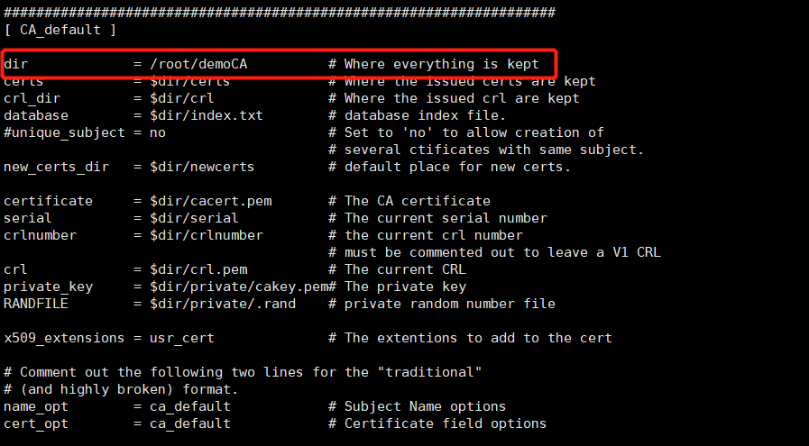
cd /root/demoCA | |
mkdir newcerts certs crl private requests | |
touch index.txt | |
echo '01' > serial |
# 3. 创建根 CA
此时当前目录为 /root/demoCA
1. 创建根 CA 密钥openssl genrsa -aes256 -out private/cakey.key.pem 4096
密钥名需要和配置中的 private_key 一致；密码可以随便写，但是要记住！！

为了确保安全，把秘钥的访问权限设置为 400： chmod 400 private/cakey.pem
2. 生成证书请求openssl req -new -key /root/demoCA/private/cakey.pem -out rootCA.csr -days 3650 执行这个命令时，会被要求提供口令保护私钥，可输入自选的口令，并记住这个口令
根证书将保存为 “cacert.pem” 文件名，有效期为 10 年。
两个文件名需要对应 cnf 文件中的 private_key 和 certificate
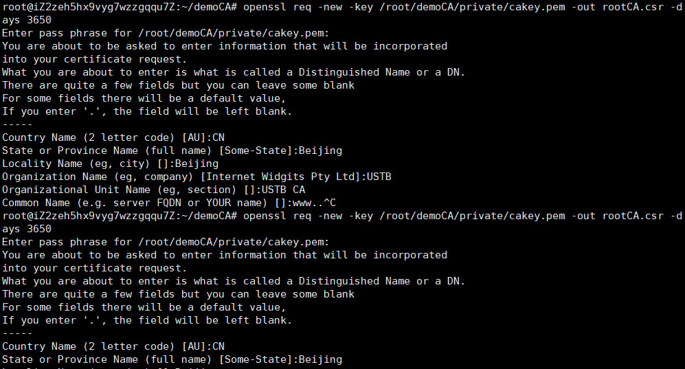
3. 自签名openssl ca -selfsign -in rootCA.csr
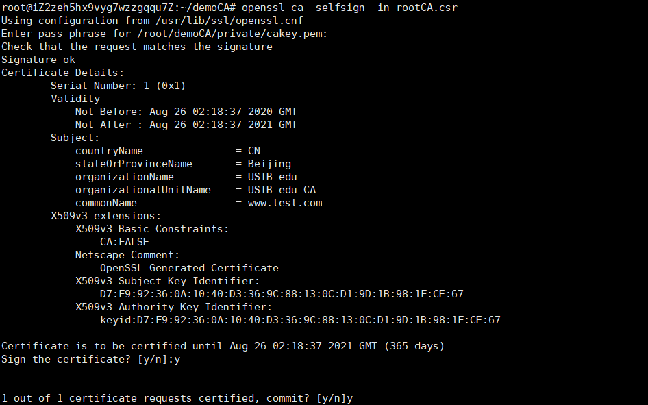
4. 查询结果
cp /root/demoCA/newcerts/01.pem/root/demoCA/cacert.pem | |
cat /root/demoCA/index.txt | |
// 输出结果：V 210826021837Z 01 unknown /C=CN/ST=Beijing/O=USTB edu/OU=USTB edu CA/CN=www.test.com |
命令 openssl x509 -text -noout -in /root/demoCA/cacert.pem 可以查看该证书的详细信息：
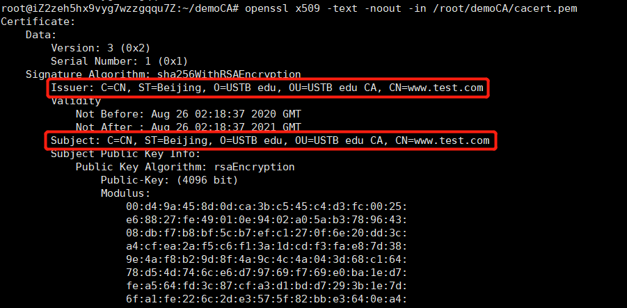
其中，Signature Algorithm 为签名算法；Issurer 是签发方，即签署证书的实体；Validity 指明证书的有效期；然后是公钥信息；Subject 指明证书自身的信息，这里 Issurer 和 Subject 的信息是一样的；
参考链接：
https://www.cnblogs.com/sparkdev/p/10369313.html 这位大佬的步骤给的挺全，还写了脚本文件，但是他的文件夹分类我有点不习惯
# 4. 创建次级 CA
中间 CA 是 root CA 的代理，其证书由 root CA 签发，同时中间 CA 能够代表根 CA 签发用户证书，由此建立起信任链。创建中间 CA 的好处是即使中间 CA 的私钥泄露，造成的影响也是可控的，我们只需要使用 root CA 撤销对应中间 CA 的证书即可。
为了体现信任链的传递逻辑，在 /root/demoCA/ 下创建对应目录即可，这里假设中间 CA 的证书目录是 /root/demoCA/intermediate/
1. 初始化次级 CA 相关目录
mkdir /root/demoCA/intermediate/ | |
cd /root/demoCA/intermediate/ | |
mkdir certs crl newcerts private | |
touch index.txt | |
echo 1000 > serial |
2. 创建中间 CA 的私钥
cd /root/demoCA/ | |
openssl genrsa -aes256 -out intermediate/private/intermediate.key.pem 4096 | |
chmod 400 intermediate/private/intermediate.key.pem |
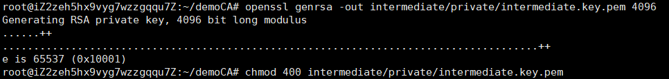
3. 创建并编辑 intermediate_CA.cnf
cp /root/intermediate_CA.cnf /root/demoCA/intermediate/intermediate_CA.cnf | |
cd /root/demoCA/intermediate | |
vi intermediate_CA.cnf |
下面是需要更改的具体配置信息：
[CA_default ]
dir = /root/demoCA/intermediate
certs = $dir/certs
private = $dir/private
certificate = $dir/certs/intermediate.cert.pem
private_key = $dir/private/intermediate.key.pem
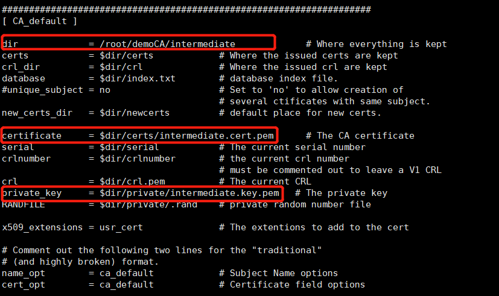
同时还需要更改其他配置，为之后给服务器证书签名做准备：
[server_cert]
#Extensions for server certificates (man x509v3_config).
basicConstraints = CA:TRUE
nsCertType = server
nsComment = "OpenSSL Generated Server Certificate"
subjectKeyIdentifier = hash
authorityKeyIdentifier = keyid,issuer:always
keyUsage = critical, CRL Sign, digitalSignature, keyEncipherment
extendedKeyUsage = serverAuth
参考链接：https://support.mozilla.org/zh-CN/questions/1024977
4. 生成 CSR 文件
cd /root/demoCA/intermediate | |
openssl req -config intermediate_CA.cnf -sha256 -new -key private/intermediate.key.pem -out certs/intermediate.csr.pem |
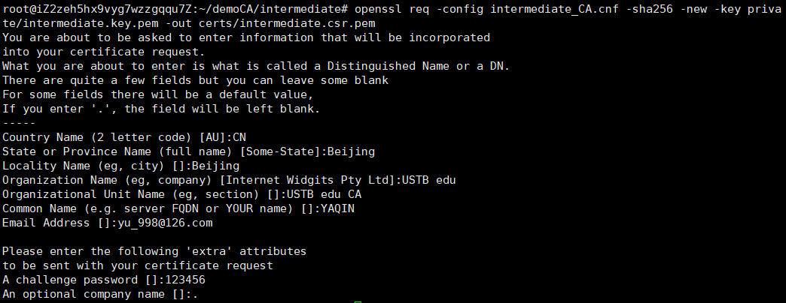
注意”Organization Name” 一项一定要与根 CA 时设置的相同
5. 用根 CA 同意中间 CA 的请求
系统会要求我们输入根 CA 的私钥密码
cd /root/demoCA | |
openssl ca -extensions v3_ca -notext -md sha256 -in intermediate/certs/intermediate.csr.pem -out intermediate/certs/intermediate.cert.pem | |
chmod 400 intermediate/certs/intermediate.cert.pem |
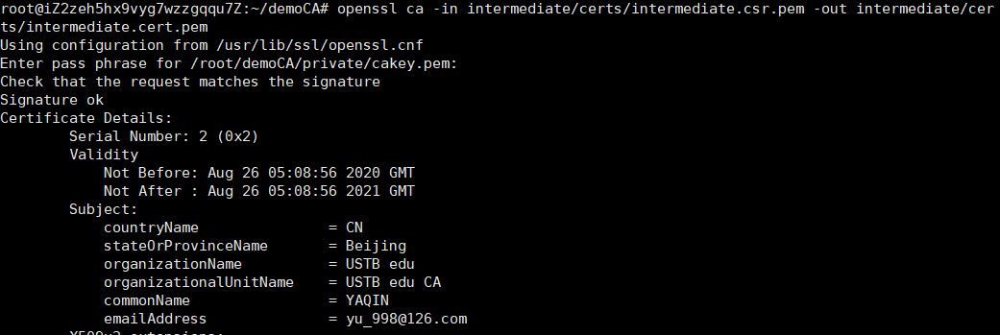
6. 验证该证书的真实性
openssl verify -CAfile /root/demoCA/cacert.pem /root/demoCA/intermediate/certs/intermediate.cert.pem |
系统显示 "OK"，说明我们颁发给中间 CA 的证书是有效的：
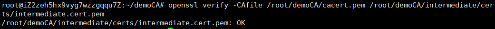
7. 构造 CA 证书链
cd /root/demoCA | |
cat intermediate/certs/intermediate.cert.pem cacert.pem > intermediate/certs/ca-chain.cert.pem | |
chmod 400 intermediate/certs/ca-chain.cert.pem |
8.(附加) p12 证书链
pem 格式的证书、证书链文件适用的场景比较多，但是在 windows 系统中一般使用 p12 格式，所以我们还需要创建一个 p12 格式的证书链
openssl pkcs12 -export -name " intermediate-ca chain" \ | |
-inkey intermediate/private/intermediate.key.pem \ | |
-in intermediate/certs/intermediate.cert.pem \ | |
-certfile intermediate/certs/ca-chain.cert.pem \ | |
-out intermediate/certs/ca-chain.cert.p12 |
至此，我们已经成功创建了中间 CA，之后的客户证书就可由中间 CA 进行签发。
参考链接：https://www.cnblogs.com/Security-Darren/p/4079605.html
# 5. 签发服务器证书
1. 服务器证书配置
cd /root | |
cp /root/demoCA/intermediate/intermediate_CA.cnf simple.cnf | |
vi simple.cnf |
下面是需要更改的具体配置信息
[ req_distinguished_name ]
commonName=
[ v3_req ]
#Extensions to add to a certificate request
subjectAltName = DNS:www.simple.ustb.com
2. 初始化目录并创建客户证书私钥
cd /root/demoCA/intermediate/ | |
mkdir server | |
cd server | |
mkdir private csr certs | |
openssl genrsa -out private/server.key.pem 2048 |
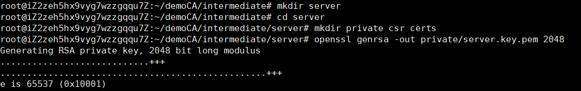
3. 生成 CSR 文件
chmod 400 private/server.key.pem | |
cd ../ | |
cp /root/simple.cnf server/server.cnf | |
cd server | |
openssl req -config server.cnf -key private/server.key.pem -new -sha256 -out csr/server.csr.pem |
注意 CN 要写在.cnf 文件中书写过的域名
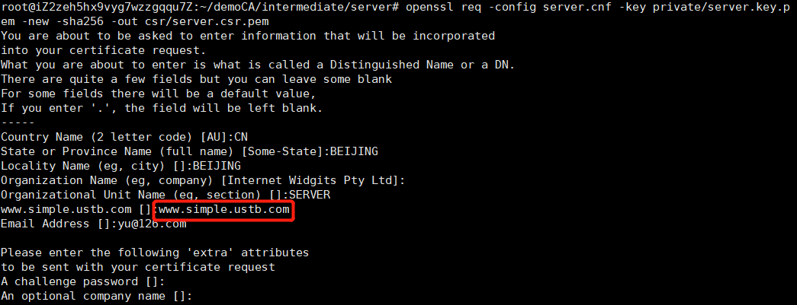
检查一下 CSR 文件信息：
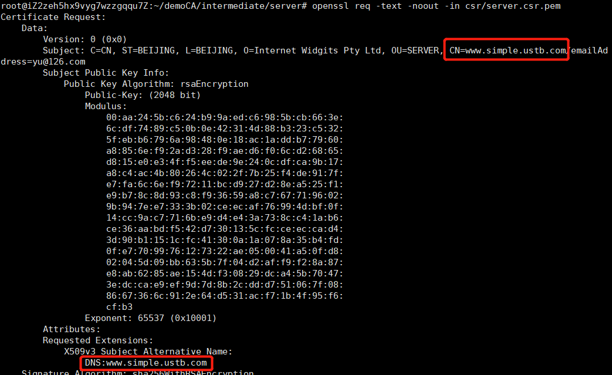
4. 用中间 CA 同意服务器请求
cd ../ | |
openssl ca -config intermediate_CA.cnf -extensions server_cert -days 3650 -notext -md sha256 -in server/csr/server.csr.pem -out server/certs/server.cert.pem | |
chmod 400 server/certs/server.cert.pem |
查看证书具体信息：
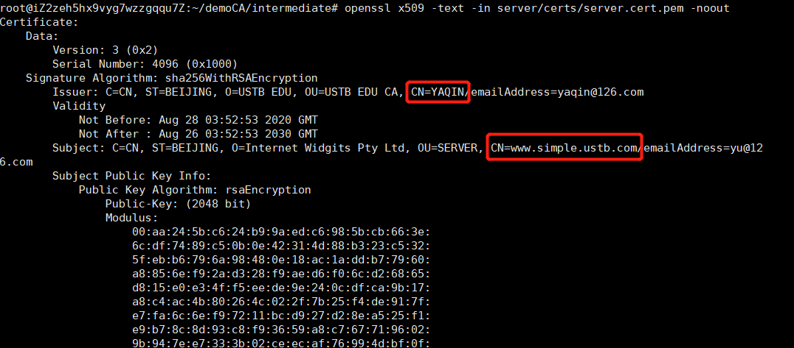
图中显示证书颁发机构为中间 CA，，证书的 Common Name 为 simple。还有一些 X509 协议相关的信息：SSL Server 表示该证书可以用来支持 HTTPS 协议；最后确认 Subject Alternative Name 为：DNS:simple 与 CN 一样
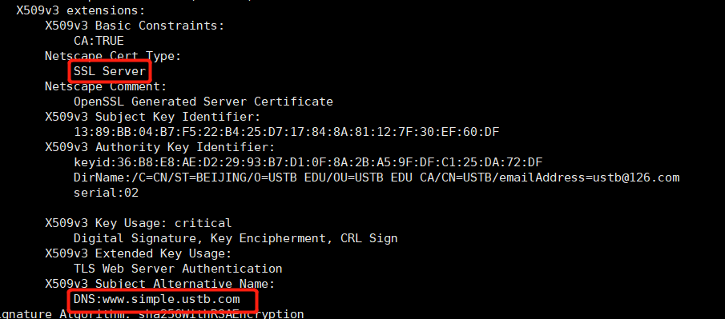
验证证书的合法性：
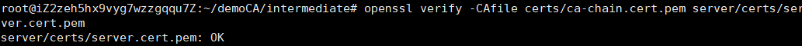
# 6. 签发客户端证书
与签发服务器证书大致相同，所以不过多描述！
1. 创建中间根 CA 配置文件
cd /root | |
cp /root/demoCA/intermediate/intermediate_CA.cnf /root/intermediate_CA_client.cnf | |
vi intermediate_CA.cnf |
主要配置：
[ usr_cert ]
basicConstraints=CA:TRUE
nsCertType = client
nsComment = "OpenSSL Generated Client Certificate"
authorityKeyIdentifier=keyid,issuer:always
keyUsage = critical, CRL Sign, digitalSignature, keyEncipherment
subjectKeyIdentifier=hash
extendedKeyUsage = clientAuth
参考链接：https://serverfault.com/questions/875229/two-way-ssl-error-400-the-ssl-certificate-error-just-for-client-certificate
2. 初始化目录并创建客户证书私钥
cd /root/demoCA/intermediate/ | |
mkdir client | |
cd client | |
mkdir private csr certs | |
openssl genrsa -out private/client.key.pem 2048 | |
chmod 400 private/client.key.pem |
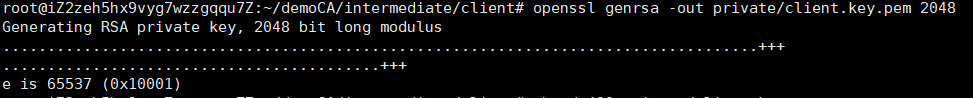
3. 生成 CSR 文件
cd ../ | |
cp /root/simple.cnf client/client.cnf | |
cd client | |
openssl req -config client.cnf -key private/client.key.pem -new -sha256 -out csr/client.csr.pem |
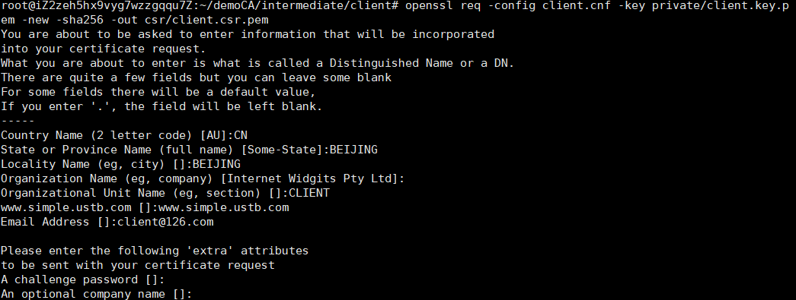
4. 用中间 CA 同意客户请求
cd ../ | |
cp /root/intermediate_CA_client.cnf /root/intermediate/intermediate_CA_client.cnf | |
openssl ca -config intermediate_CA_client.cnf -extensions usr_cert -days 3650 -notext -md sha256 -in client/csr/client.csr.pem -out client/certs/client.cert.pem | |
chmod 400 client/certs/client.cert.pem |
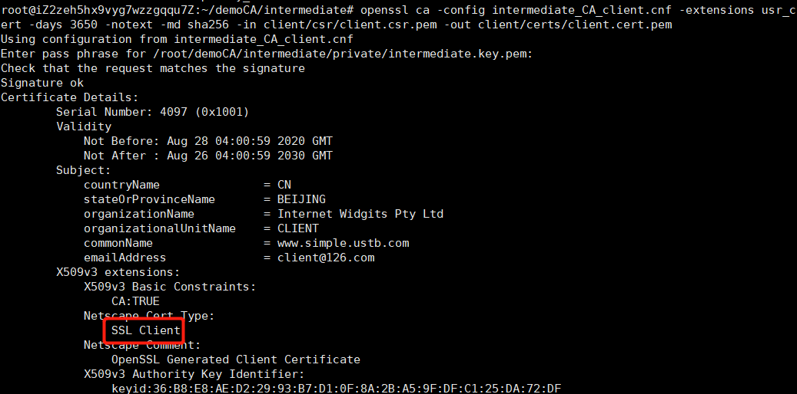
5. 验证证书的合法性：
openssl verify -CAfile certs/ca-chain.cert.pem client/certs/client.cert.pem | |
openssl x509 -in client/certs/client.cert.pem -noout -purpose | grep 'SSL client :' |
后者命令验证是否是 client 证书：
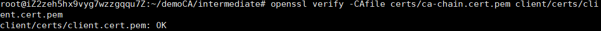
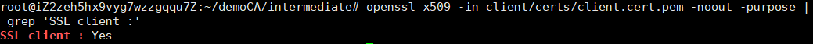
6. 生成 pcsk12 文件
pcsk12 文件可以在 windows 环境下安装并信任，生成时需要创建密码：
openssl pkcs12 -export -clcerts -in /root/demoCA/intermediate/test3/certs/test3.cert.pem -inkey /root/demoCA/intermediate/test3/private/test3.key.pem -out /etc/nginx/ssl/test3.p12 |
# 7. 创建域名解析
因为基于 Web 的安全认证与 url 密切相关，所以 web 访问是通过 url 进行的，所以要先配置域名解析。
来到本机 Windows 路径 C:/Windows/System32/driver/etc/hosts
并在这个文件中加入一行
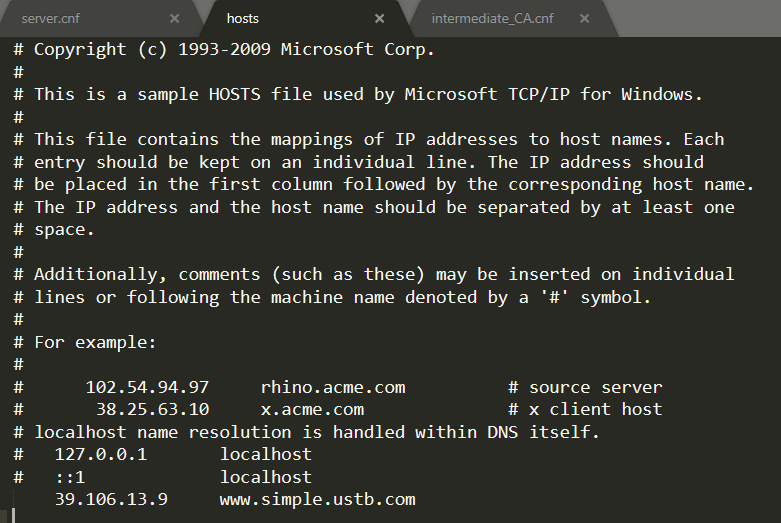
# 8. 配置 nginx 服务器
配置 nginx 服务器，使之支持证书双向认证
目录：/www/wwwroot/39.106.13.9/nginx.cnf
在 server 的配置项中加入如下几行：
listen 8081 ssl;
…
ssl_certificate /etc/nginx/ssl/server.cert.pem;
ssl_certificate_key /etc/nginx/ssl/server.key.pem;
#ssl_client_certificate /etc/nginx/ssl/ca-chain.cert.pem;
#ssl_verify_depth 2;
#ssl_verify_client on;
启动 nginx 服务：
nginx -t | |
nginx -s reload |
# 9. 以双向认证的方式访问 HTTPS 服务
导入数字证书，点击桌面浏览器 firefox，并点击 firefox 右上角的菜单项（三个横）
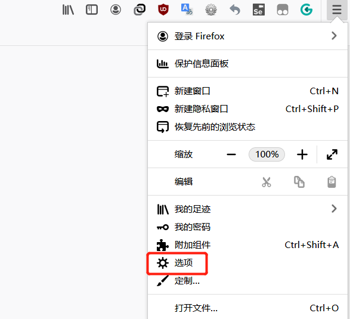
点击 View Certificates，选择 Authorities，点击下方 Import 导入证书 (导入作为 ssl_certificate 的证书)
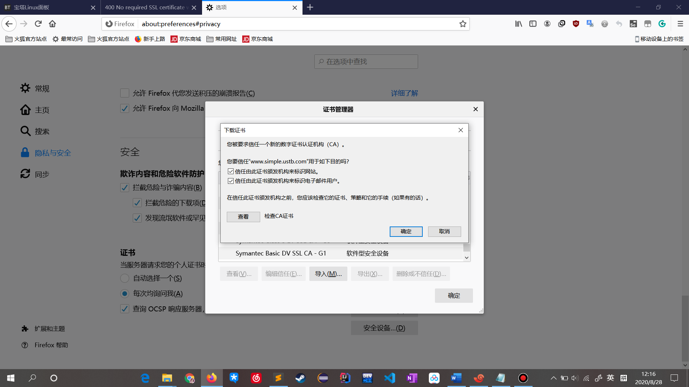
选择 Your Certificates，导入先前在创建客户端证书时生成的.p12 文件 （需要输入前面设置的口令）
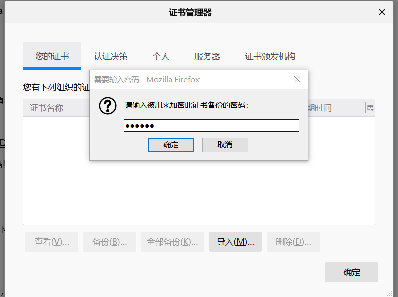
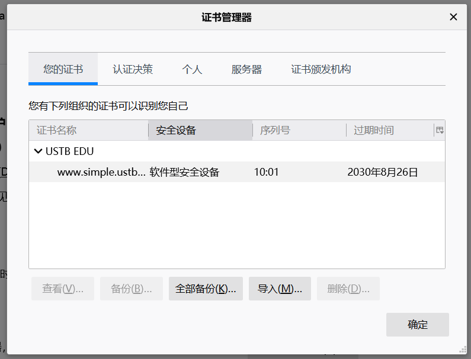
在地址栏输入 https://www.simple.ustb.com:8081（填写格式：https://[DNS]:[端口]） 并回车，选择导入的客户端证书
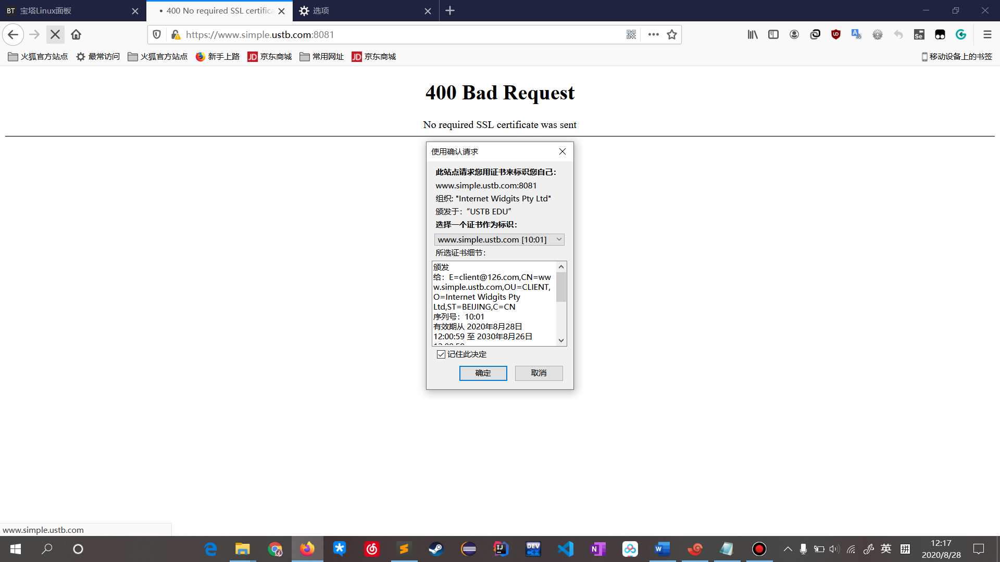
点击 OK 继续访问，出现欢迎界面
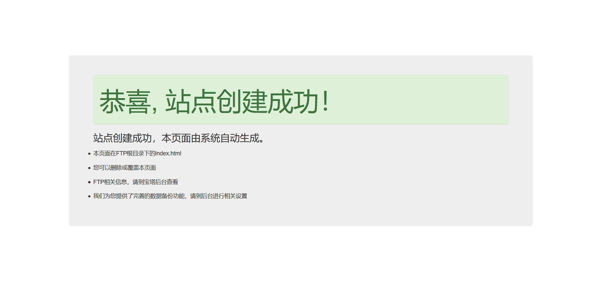